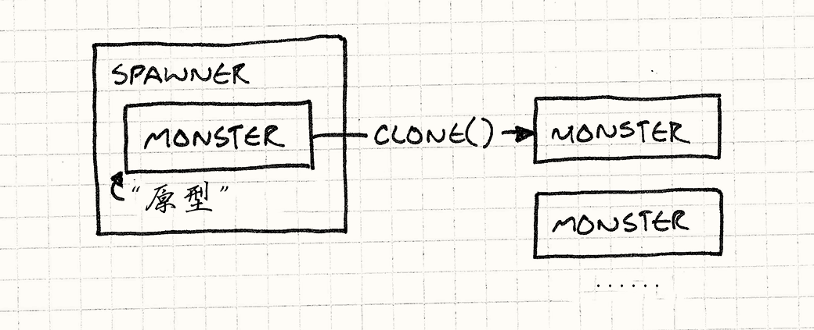
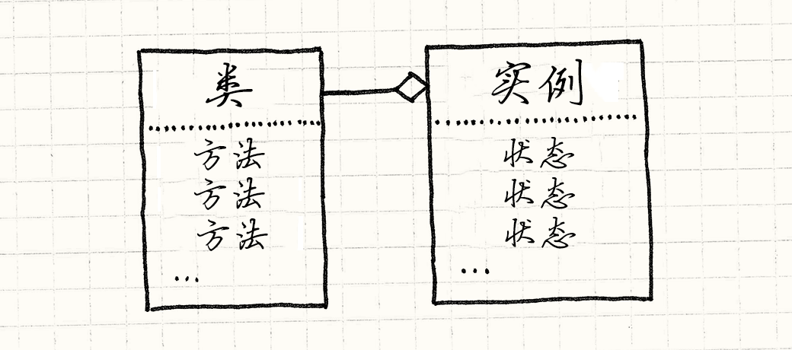
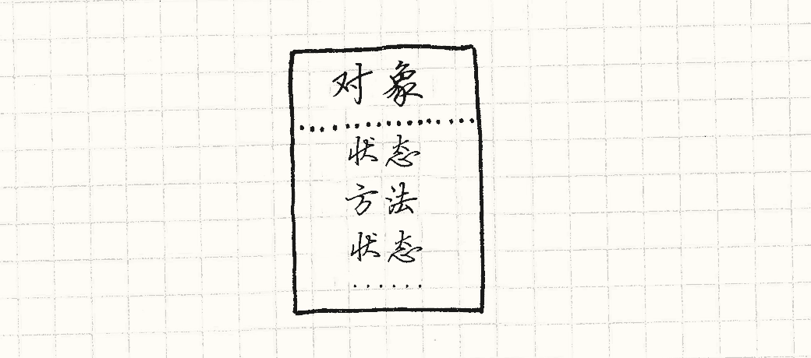
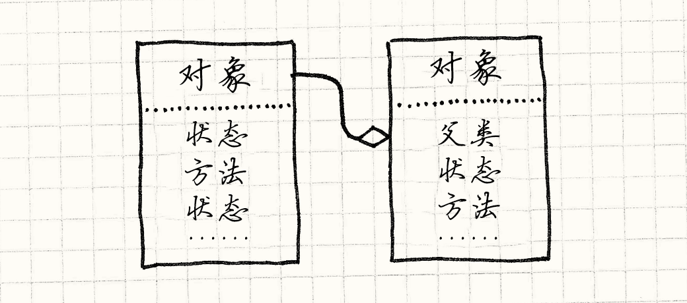
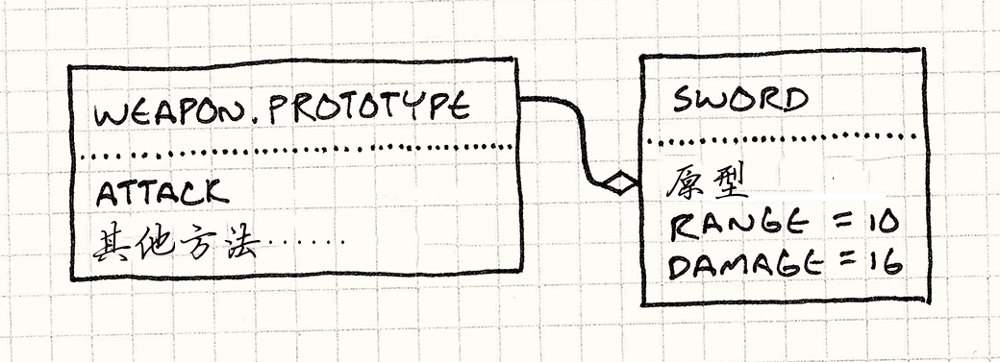

Prototype
Game Programming PatternsDesign Patterns Revisited
The first time I heard the word “prototype” was in Design Patterns. Today, it seems like everyone is saying it, but it turns out they aren’t talking about the design pattern. We’ll cover that here, but I’ll also show you other, more interesting places where the term “prototype” and the concepts behind it have popped up. But first, let’s revisit the original pattern.
第一次我听到“原型”这个词是在设计模式中。今天，似乎每个人都在谈论它，谈事他们讨论的不是设计模式。我们等会会覆盖它，但是我同样会展示给你另一个，更加有趣的“原型”使用的地方以及他出现的背后观念。但是首先，让我们重访原型的设计模式。
The Prototype Design Pattern
原型设计模式
Pretend we’re making a game in the style of Gauntlet. We’ve got creatures and fiends swarming around the hero, vying for their share of his flesh. These unsavory dinner companions enter the arena by way of “spawners”, and there is a different spawner for each kind of enemy.
假设我们要用Gauntlet的风格做一款游戏。我们有动物和魔鬼蜂群围绕着英雄，竞争分享他的血肉。这些不可口的晚餐同伴通过“产卵者”进入这片区域，这对于每一种敌人有不同的产卵者。
For the sake of this example, let’s say we have different classes for each kind
of monster in the game — Ghost, Demon, Sorcerer, etc., like:
为了这个例子的利益，假设我们队每一种游戏中的怪物都有不同的类——Ghost，Demon，Sorcerer等等，像这样：
class Monster { // Stuff... }; class Ghost : public Monster {}; class Demon : public Monster {}; class Sorcerer : public Monster {};
A spawner constructs instances of one particular monster type. To support every monster in the game, we could brute-force it by having a spawner class for each monster class, leading to a parallel class hierarchy:
一个产卵者构造特定种类的怪物的实例。为了在游戏中支持每一种怪物，我们可以残忍的强迫它，让每一个怪物类都有一个产卵者类，，得到了一个平行的类层次。

Implementing it would look like this:
实现这个看起来像是这个样：
class Spawner { public: virtual ~Spawner() {} virtual Monster* spawnMonster() = 0; }; class GhostSpawner : public Spawner { public: virtual Monster* spawnMonster() { return new Ghost(); } }; class DemonSpawner : public Spawner { public: virtual Monster* spawnMonster() { return new Demon(); } }; // You get the idea...
Unless you get paid by the line of code, this is obviously not a fun way to hack this together. Lots of classes, lots of boilerplate, lots of redundancy, lots of duplication, lots of repeating myself…
除非你会因为这行代码获得工资，这很明显不是有趣的方法将这些焊在一起。众多类，众多引用，众多冗余，众多副本，众多重复自我……
The Prototype pattern offers a solution. The key idea is that an object can spawn other objects similar to itself. If you have one ghost, you can make more ghosts from it. If you have a demon, you can make other demons. Any monster can be treated as a prototypal monster used to generate other versions of itself.
原型模式提供了一个解决方案。关键注意是一个对象可以产出与它自己相近的对象。如果你有一个鬼影，你可以从他制造更多的鬼影。如果你有一个恶魔，你可以制造其他恶魔。任何怪物都可以被视为原型怪物来产出它自己的其他版本。
To implement this, we give our base class, Monster, an abstract clone()
method:
为了实现这一点，我们给出了我们的基类Monster和一个抽象方法clone()：
class Monster { public: virtual ~Monster() {} virtual Monster* clone() = 0; // Other stuff... };
Each monster subclass provides an implementation that returns a new object identical in class and state to itself. For example:
每一个怪兽子类提供一个实现，返回一个新的对象与他自己的类和状态都完全一样。举个例子：
class Ghost : public Monster { public: Ghost(int health, int speed) : health_(health), speed_(speed) {} virtual Monster* clone() { return new Ghost(health_, speed_); } private: int health_; int speed_; };
Once all our monsters support that, we no longer need a spawner class for each monster class. Instead, we define a single one:
一旦我们所有的怪物都支持那个，我们不需要一个为每一个怪物类制作一个产卵类。取而代之的是，我们只定义一个：
class Spawner { public: Spawner(Monster* prototype) : prototype_(prototype) {} Monster* spawnMonster() { return prototype_->clone(); } private: Monster* prototype_; };
It internally holds a monster, a hidden one whose sole purpose is to be used by the spawner as a template to stamp out more monsters like it, sort of like a queen bee who never leaves the hive.
它内部有保存一个怪物，一个隐藏的怪物，唯一的目的就是被产卵者作为模板去产生更多像他一样的怪物，有点像一个从来不离开巢穴的蜂后。

To create a ghost spawner, we create a prototypal ghost instance and then create a spawner holding that prototype:
为了创造一个鬼魂产出者，我们创建一个原型鬼魂实例然后创建一个产出者拥有这个实例：
Monster* ghostPrototype = new Ghost(15, 3); Spawner* ghostSpawner = new Spawner(ghostPrototype);
One neat part about this pattern is that it doesn’t just clone the class of the prototype, it clones its state too. This means we could make a spawner for fast ghosts, weak ghosts, or slow ghosts just by creating an appropriate prototype ghost.
我们这个模式的灵巧部分是它不但拷贝原型的类，也拷贝它的状态。这就意味着我们可以创建一个产出者生产快速的鬼魂，虚弱的鬼魂，或者慢速的鬼魂，只需要创建一个合适的原型鬼魂。
I find something both elegant and yet surprising about this pattern. I can’t imagine coming up with it myself, but I can’t imagine not knowing about it now that I do.
我在这个模式中找到了一些既优雅又惊讶的东西。我无法相信我找到的东西，但我更无法想象不知道这些东西的现在的自己。
How well does it work?
它工作的如何？
Well, we don’t have to create a separate spawner class for each monster, so
that’s good. But we do have to implement clone() in each monster class.
That’s just about as much code as the spawners.
好吧，我们不需要为每一个怪物创建一个单独 产出者类，那很好。但我们确实需要在每个怪物类中实现实现clone()。这和产卵者中的代码一样多。
There are also some nasty semantic ratholes when you sit down to try to write a
correct clone(). Does it do a deep clone or shallow one? In other words, if a
demon is holding a pitchfork, does cloning the demon clone the pitchfork too?
这里有些令人不快的语义漏洞，当你坐下来试着写一个正确的clone()。做一个深层拷贝还是浅层的呢？换言之，如果一个恶魔拿着草叉，克隆恶魔也要克隆草叉吗？
Also, not only does this not look like it’s saving us much code in this contrived problem, there’s the fact that it’s a contrived problem. We had to take as a given that we have separate classes for each monster. These days, that’s definitely not the way most game engines roll.
同时，这看上去既不减少我们在已存问题上的代码，这里事实上还有一些人为的问题。我们需要将每个怪物有独立的类作为前提条件。最近的日子，这绝对不是大多数游戏引擎运转的方法。
Most of us learned the hard way that big class hierarchies like this are a pain to manage, which is why we instead use patterns like Component and Type Object to model different kinds of entities without enshrining each in its own class.
我们中的大多数以痛苦的方式学到这样巨大的类层次管理起来是很痛苦的，那就是我们为什么用组件模式和类型对象来为不同种类的实体建模，无需让他们每一个都有自己的类。
Spawn functions
产卵函数
Even if we do have different classes for each monster, there are other ways to decorticate this Felis catus. Instead of making separate spawner classes for each monster, we could make spawn functions, like so:
哪怕我们确实为每一怪物都有不同的类，这里有其他方式这里还有其他方式来为家猫剥皮。不是使用为每一个怪物建立分离的产卵类，我们可以创建产卵函数，就像这样：
Monster* spawnGhost() { return new Ghost(); }
This is less boilerplate than rolling a whole class for constructing a monster of some type. Then the one spawner class can simply store a function pointer:
这比将不同类型怪兽的构建包到一个有更少的样板。
typedef Monster* (*SpawnCallback)(); class Spawner { public: Spawner(SpawnCallback spawn) : spawn_(spawn) {} Monster* spawnMonster() { return spawn_(); } private: SpawnCallback spawn_; };
To create a spawner for ghosts, you do:
为了给鬼魂创建一个产卵者，你需要做：
Spawner* ghostSpawner = new Spawner(spawnGhost);
Templates
模板
By now, most C++ developers are familiar with templates. Our spawner class needs to construct instances of some type, but we don’t want to hard code some specific monster class. The natural solution then is to make it a type parameter, which templates let us do:
到了现在，大多数C++开发者很熟悉模板了。我们的产卵者类需要构建各种类型的实例，但是五门不想Wie特定的怪物类硬编码。自然的解决方案是将它作为类型参数，就是模板让我们做的：
class Spawner { public: virtual ~Spawner() {} virtual Monster* spawnMonster() = 0; }; template <class T> class SpawnerFor : public Spawner { public: virtual Monster* spawnMonster() { return new T(); } };
Using it looks like:
像这样使用它：
Spawner* ghostSpawner = new SpawnerFor<Ghost>();
First-class types
第一公民类型
The previous two solutions address the need to have a class, Spawner, which is
parameterized by a type. In C++, types aren’t generally first-class, so that
requires some gymnastics. If you’re using a
dynamically-typed language like JavaScript, Python, or Ruby where classes are
regular objects you can pass around, you can solve this much more directly.
前面的两个解决方案完成了需要一个类的需求，Spawner，那个以类型作为参数haunted的东西。在C++中，类型不是第一公民，所以需要一些艺术。如果你使用了一个动态类型语言比如JavaScript，Python，或者Ruby，他们的类是你可以传递的对象，你可以更加直接的解决这个问题。
When you make a spawner, just pass in the class of monster that it should construct — the actual runtime object that represents the monster’s class. Easy as pie.
当你完成一个产出者，直接向他传递一个它应该构建的怪物的类型——那个真实的运行时对象，代表了怪物的类。小菜一碟。
With all of these options, I honestly can’t say I’ve found a case where I felt the Prototype design pattern was the best answer. Maybe your experience will be different, but for now let’s put that away and talk about something else: prototypes as a language paradigm.
使用这些选项，我不能诚实的说我找到了一种情况，原型设计模式是最好的方案。也许你的经验有所不同，但是现在把它放到一边，讨论点别的：原型作为一种语言范式。
The Prototype Language Paradigm
原型语言范式
Many people think “object-oriented programming” is synonymous with “classes”. Definitions of OOP tend to feel like credos of opposing religious denominations, but a fairly non-contentious take on it is that OOP lets you define “objects” which bundle data and code together. Compared to structured languages like C and functional languages like Scheme, the defining characteristic of OOP is that it tightly binds state and behavior together.
很多人认为“面向对象编程”和“类”是同义词。OOP的定义感觉像是相反宗教信仰的教义，公平无争议的是OOP让你定义“对象”，将数据和代码绑定在一起。与结构化的语言比如C相比，与函数语言比如Scheme相比，OOP的定义特性是它将状态和行为紧紧地绑在一起。
You may think classes are the one and only way to do that, but a handful of guys including Dave Ungar and Randall Smith beg to differ. They created a language in the 80s called Self. While as OOP as can be, it has no classes.
你也许认为类是唯一可以完成这个的方法，但是一大堆家伙包括Dave Ungar和Randall Smith一直拼命区分。他们在80年代床架了一种语言叫做Self。它可以是OOP的，同时没有类
Self
Self语言
In a pure sense, Self is more object-oriented than a class-based language. We think of OOP as marrying state and behavior, but languages with classes actually have a line of separation between them.
纯粹的感觉上，Self比一个基于类的语言更加面向对象。我们人为OOP是将状态和行为绑在一起，但是有类的于洋实际在他们之间画了一条线。
Consider the semantics of your favorite class-based language. To access some state on an object, you look in the memory of the instance itself. State is contained in the instance.
考虑你最喜欢的基于类的语言语义。为了接触一个对象中的一些状态，你查询内存中实例。状态是包含在实例之中的。
To invoke a method, though, you look up the instance’s class, and then you look up the method there. Behavior is contained in the class. There’s always that level of indirection to get to a method, which means fields and methods are different.
但是，为了调用一个方法，你查询实例的类，然后你在那里查询方法。行为被包含在类中。这里总有一次跳转来获得一个方法，这意味着字段和方法是不同的。

Self eliminates that distinction. To look up anything, you just look on the object. An instance can contain both state and behavior. You can have a single object that has a method completely unique to it.
Self结束了这种分歧。找任何东西，你需要在对象中找。一个实例同时包含状态和行为。你可以有一个对象，他有一个完全独特的方法。

If that was all Self did, it would be hard to use. Inheritance in class-based languages, despite its faults, gives you a useful mechanism for reusing polymorphic code and avoiding duplication. To accomplish something similar without classes, Self has delegation.
如果这就是Self做的，那它很难使用。在基于类的语言中继承，不管他的缺陷，给你了有用的机制来重用多态代码和避免复制。为了不用类而实现一些相同的东西，Self拥有授权。
To find a field or call a method on some object, we first look in the object itself. If it has it, we’re done. If it doesn’t, we look at the object’s parent. This is just a reference to some other object. When we fail to find a property on the first object, we try its parent, and its parent, and so on. In other words, failed lookups are delegated to an object’s parent.
为了在对象中寻找字段或者调用方法，我们首先在对象自己里查找。如果它有，我们就完成了。如果它没有，我吗在对象的父类中寻找。这是一个对其他对象的引用。当我们没能在第一个对象中找到属性，我们尝试它的父母，然后父母的父母，继续下去。换言之，失败的查找被授权给对象的父母。

Parent objects let us reuse behavior (and state!) across multiple objects, so
we’ve covered part of the utility of classes. The other key thing classes do is
give us a way to create instances. When you need a new thingamabob, you can just
do new Thingamabob(), or whatever your preferred language’s syntax is. A class
is a factory for instances of itself.
父母对象让我们在不同对象间重用行为（还有状态！），所以我们覆盖了类的公共部分。另外一个类做的关键事情就是给了我们一种方法来创建实例。但你需要一个新的某物，你可以直接new Thingamabob()，或者无论什么你喜欢的语言表达法。一个类是实例本身的工厂。
Without classes, how do we make new things? In particular, how do we make a bunch of new things that all have stuff in common? Just like the design pattern, the way you do this in Self is by cloning.
不用类，我们怎样创建新东西？特别的，我们如何创建一堆所有东西都是一样的新东西？就像设计模式，你在Self中的方式是使用克隆。
In Self, it’s as if every object supports the Prototype design pattern automatically. Any object can be cloned. To make a bunch of similar objects, you:
在Self中，就好像每一个对象都自动支持原型设计模式。任何对象都能被克隆。为了获得一堆相似的对象，你：
-
Beat one object into the shape you want. You can just clone the base
Objectbuilt into the system and then stuff fields and methods into it. -
Clone it to make as many… uh… clones as you want.
-
讲一个对象拍打成你想要的形状。你可以直接克隆系统内建的基本
Object，然后向其中添加字段和方法。 -
克隆它来产出……额……你想要的克隆数量。
This gives us the elegance of the Prototype design pattern without the tedium of
having to implement clone() ourselves; it’s built into the system.
这就给了我们原型模式的优雅而无需我们自己沉闷的实现clone()；它被内建子啊系统中。
This is such a beautiful, clever, minimal system that as soon as I learned about it, I started creating a prototype-based language to get more experience with it.
这是一个如此美妙，紧密最小化的系统，当我一听说它，我就开始创建一个基于原型的语言来获取更多经验。
How did it go?
它运行的如何？
I was super excited to play with a pure prototype-based language, but once I had mine up and running, I discovered an unpleasant fact: it just wasn’t that fun to program in.
我急切的想要使用一个纯粹的基于原型的语言，但是一旦我完成了并运行它，我发现了一个不愉快的事实：在其上编程没有那样有趣。
Sure, the language was simple to implement, but that was because it punted the complexity onto the user. As soon as I started trying to use it, I found myself missing the structure that classes give. I ended up trying to recapitulate it at the library level since the language didn’t have it.
是的，语言很容易实现，那是因为它把复杂度推给了用户。一旦我们开始试着使用它，我发现我想念类给的结构。在库级别我最终停止了概括它，因为语言并没有。
Maybe this is because my prior experience is in class-based languages, so my mind has been tainted by that paradigm. But my hunch is that most people just like well-defined “kinds of things”.
谢雨这是因为我之前的经验是在基于类的语言上，所以我的头脑被那个范式污染了。但是我的直觉是大部分人还是喜欢好好定义的“那些事物”。
In addition to the runaway success of class-based languages, look at how many games have explicit character classes and a precise roster of different sorts of enemies, items, and skills, each neatly labeled. You don’t see many games where each monster is a unique snowflake, like “sort of halfway between a troll and a goblin with a bit of snake mixed in”.
除去基于类的语言的成功，看看有多少游戏明确指定了玩家类和不同种的敌人物品技能的清单，每一个都有整齐的标签。你你在不会再游戏中看到每一个怪物都是独立的雪团，像“洞穴人和哥布林还有一些雪混合在一起”的东西。
While prototypes are a really cool paradigm and one that I wish more people knew about, I’m glad that most of us aren’t actually programming using them every day. The code I’ve seen that fully embraces prototypes has a weird mushiness to it that I find hard to wrap my head around.
原型是非常酷的范式，也是我希望有更多人了解的东西，我很庆幸我们不是每天都用他们编程。我看到的完全皈依原型的语言是一团浆糊，我很难用它完成点什么。
What about JavaScript?
JavaScript又怎么样呢？
OK, if prototype-based languages are so unfriendly, how do I explain JavaScript? Here’s a language with prototypes used by millions of people every day. More computers run JavaScript than any other language on Earth.
好吧，如果基于原型的于洋是不那么友好，我怎么解释JavaScript呢？这是一个有原型的语言，每天都被数百万人使用。运行JavaScript的机器数量超过了地球上其他所有的语言。
Brendan Eich, the creator of JavaScript, took inspiration directly from Self, and many of JavaScript’s semantics are prototype-based. Each object can have an arbitrary set of properties, both fields and “methods” (which are really just functions stored as fields). An object can also have another object, called its “prototype”, that it delegates to if a field access fails.
Brendan Eich，JavaScript的缔造者，从Self中直接吸收灵感，很多JavaScript的语义都是基于原型的。每一个对象都有任意集合的特性，字段和“方法”（事实上只是存储为字段的函数）都是如此。一个对象可以拥有另一个对象，被称为它的“原型”，如果字段获取失败就会获得它。
But, despite that, I believe that JavaScript in practice has more in common with class-based languages than with prototypal ones. One hint that JavaScript has taken steps away from Self is that the core operation in a prototype-based language, cloning, is nowhere to be seen.
但是不管那个，我相信JavaScript在事件中更像是基于类的而不是基于原型的。一个关键点是JavaScript将一些基于原型的语言核心操作取了出来，克隆，不见了。
There is no method to clone an object in JavaScript. The closest it has is
Object.create(), which lets you create a new object that
delegates to an existing one. Even that wasn’t added until ECMAScript 5,
fourteen years after JavaScript came out. Instead of cloning, let me walk you
through the typical way you define types and create objects in JavaScript. You
start with a constructor function:
在JavaScript中没有方法来克隆一个对象。最接近的是Object.create()，允许你创建一个新的对象代表现有的。那个在ECMAScript5之前都没有添加，那是JavaScript出现后的十四年了。不用克隆，让我带你浏览一下JavaScript中in定义类和创建对象的经典方法。从一个构造器函数开始：
function Weapon(range, damage) { this.range = range; this.damage = damage; }
This creates a new object and initializes its fields. You invoke it like:
这创建了一个新对象并初始化了它的字段。你像这样引入它：
var sword = new Weapon(10, 16);
The new here invokes the body of the Weapon() function with this bound to a
new empty object. The body adds a bunch of fields to it, then the now-filled-in
object is automatically returned.
这里的new引入了Weapon()函数的实体，而this绑定到一个新的空对象上。实体添加了一系列字段到它上面，然后现在填满的对象自动返回了。
The new also does one other thing for you. When it creates that blank object,
it wires it up to delegate to a prototype object. You can get to that object
directly using Weapon.prototype.
new同样为你做了另外一件事情。当他创建那个空对象，它将它和一个原型对象连接起来了。你可以用Weapon。prototype来直接使用它。
While state is added in the constructor body, to define behavior, you usually add methods to the prototype object. Something like this:
当状态被添加到构建器中，为了定义行为，你通常为原型对象添加方法。就像这样：
Weapon.prototype.attack = function(target) { if (distanceTo(target) > this.range) { console.log("Out of range!"); } else { target.health -= this.damage; } }
This adds an attack property to the weapon prototype whose value is a
function. Since every object returned by new Weapon() delegates to
Weapon.prototype, you can now call sword.attack() and it will call that
function. It looks a bit like this:
这添加了一个attack属性给武器原型，值是一个函数。由于每一个对象都通过代表Weapon.prototype的new Weapon()返回，你现在可以调用一个sword.attack()，他会调用那个函数。这看上去像是这样：

Let’s review:
让我们回顾一下：
-
The way you create objects is by a “new” operation that you invoke using an object that represents the type — the constructor function.
-
你创建对象的方法是通过“new”操作，引入一个代表类型的对象——构造器函数。
-
State is stored on the instance itself.
-
状态被存储在实例本身中。
-
Behavior goes through a level of indirection — delegating to the prototype — and is stored on a separate object that represents the set of methods shared by all objects of a certain type.
-
行为通过系列跳转——指向原型的代表——被存储在一个分散的对象中，代表了一系列特定类型的对象共享的方法。
Call me crazy, but that sounds a lot like my description of classes earlier. You can write prototype-style code in JavaScript (sans cloning), but the syntax and idioms of the language encourage a class-based approach.
说我疯了吧，但这听起来很像是我之前描述的类。你可以写原型风格的代码在JavaScript中（没有克隆），但是语言的语义和通常方法推荐一个基于类的方法。
Personally, I think that’s a good thing. Like I said, I find doubling down on prototypes makes code harder to work with, so I like that JavaScript wraps the core semantics in something a little more classy.
个人而言，我认为这是一个好事。就像我说的，我发现完全使用原型让代码很难处理，所以我喜欢JavaScript间整个核心语义包裹在一些更漂亮的东西中。
Prototypes for Data Modeling
为数据模型建立原型
OK, I keep talking about things I don’t like prototypes for, which is making this chapter a real downer. I think of this book as more comedy than tragedy, so let’s close this out with an area where I do think prototypes, or more specifically delegation, can be useful.
好吧，我不断的讨论我不喜欢原型的原因，这让这一章有些黯淡。我认为这本书该比惨案更加欢乐些，所以让我们结束这个话题在我确实考虑原型的地方，或者更加精确的，委托，是有用的。
If you were to count all the bytes in a game that are code compared to the ones that are data, you’d see the fraction of data has been increasing steadily since the dawn of programming. Early games procedurally generated almost everything so they could fit on floppies and old game cartridges. In many games today, the code is just an “engine” that drives the game, which is defined entirely in data.
如果你想要计算中游戏的字节数并与数据的相比，你可以看到游戏的部分随着程序的进行稳定的增长。早期的游戏在程序中生成几乎任何东西，这样他们可以适应磁盘和老式游戏盒。子啊今日的游戏中，代码只是驱动游戏的“引擎”，游戏是完全由数据定义的。
That’s great, but pushing piles of content into data files doesn’t magically solve the organizational challenges of a large project. If anything, it makes it harder. The reason we use programming languages is because they have tools for managing complexity.
这很好，但是将内容推到数据文件中不会魔法般的解决组织大工程的挑战。如果有什么区别的话，它让它更难了。我们使用编程语言的原因就是他们有办法处理复杂性。
Instead of copying and pasting a chunk of code in ten places, we move it into a function that we can call by name. Instead of copying a method in a bunch of classes, we can put it in a separate class that those classes inherit from or mix in.
不是讲一堆代码拷来拷去，我们将其移入一个函数中，我们可以通过名字调用。不是在一堆类之间复制方法，我可以将其放入分离的类中，其他类可以从它继承或者把它混合进来。
When your game’s data reaches a certain size, you really start wanting similar features. Data modeling is a deep subject that I can’t hope to do justice here, but I do want to throw out one feature for you to consider in your own games: using prototypes and delegation for reusing data.
当你的游戏数据达到一定规模时，你真的需要考虑更加简单的特性。数据模式是一个我不能指望在这里能说清的问题，但是我确实希望将一个特性扔给你在你的游戏中考虑：使用原型和委托来重要数据。
Let’s say we’re defining the data model for the shameless Gauntlet rip-off I mentioned earlier. The game designers need to specify the attributes for monsters and items in some kind of files.
让我们假设我们为我早先提到的无耻挑战定义数据模型。游戏设计者需要特定怪物和事物在很多文件中定义它们的属性。
One common approach is to use JSON. Data entities are basically maps, or property bags, or any of a dozen other terms because there’s nothing programmers like more than inventing a new name for something that already has one.
一个通用的方法是使用JSON。数据实体是基本“图”，或者“属性包”，或者其他什么术语，因为程序员就喜欢为已有的东西发明新名字。
So a goblin in the game might be defined something like this:
所以游戏中的一个哥布林也许被定义为像这样的东西：
{ "name": "goblin grunt", "minHealth": 20, "maxHealth": 30, "resists": ["cold", "poison"], "weaknesses": ["fire", "light"] }
This is pretty straightforward and even the most text-averse designer can handle that. So you throw in a couple of sibling branches on the Great Goblin Family Tree:
这看上去很直观，哪怕是最讨厌文字的设计者也能完成。所以你给哥布林大家族添加几个兄弟分支：
{ "name": "goblin wizard", "minHealth": 20, "maxHealth": 30, "resists": ["cold", "poison"], "weaknesses": ["fire", "light"], "spells": ["fire ball", "lightning bolt"] } { "name": "goblin archer", "minHealth": 20, "maxHealth": 30, "resists": ["cold", "poison"], "weaknesses": ["fire", "light"], "attacks": ["short bow"] }
Now, if this was code, our aesthetic sense would be tingling. There’s a lot of duplication between these entities, and well-trained programmers hate that. It wastes space and takes more time to author. You have to read carefully to tell if the data even is the same. It’s a maintenance headache. If we decide to make all of the goblins in the game stronger, we need to remember to update the health of all three of them. Bad bad bad.
现在，如果这是代码，我们的美感就被刺激到了。这里在实体间有很多的重复性，训练优良的程序员讨厌它。它浪费了空间，消耗了作者更多时间。你需要仔细阅读代码才知道这些数据是不是相同的。这让维护头疼。如果我们决定让所有的哥布林在游戏中变强，我们需要记住为他们三个都更新一遍。糟糕糟糕糟糕。
If this was code, we’d create an abstraction for a “goblin” and reuse that across the three goblin types. But dumb JSON doesn’t know anything about that. So let’s make it a bit smarter.
如果这是代码，我们会为“哥布林”创造一个抽象，然后子啊是那种哥布林类型中重用他们。但是愚蠢的JSON不知道这么做。素以让我们把它做得更加巧妙。
We’ll declare that if an object has a "prototype"
field, then that defines the name of another object that this one delegates to.
Any properties that don’t exist on the first object fall back to being looked up
on the prototype.
我们声明它好像一个对象有“原型”字段，然后定义这个对象委托给的另一个对象。任何不在第一个对象中的原型都退回在原型中查找。
With that, we can simplify the JSON for our goblin horde:
通过这样，我们可以简单的定义一大群哥布林：
{ "name": "goblin grunt", "minHealth": 20, "maxHealth": 30, "resists": ["cold", "poison"], "weaknesses": ["fire", "light"] } { "name": "goblin wizard", "prototype": "goblin grunt", "spells": ["fire ball", "lightning bolt"] } { "name": "goblin archer", "prototype": "goblin grunt", "attacks": ["short bow"] }
Since the archer and wizard have the grunt as their prototype, we don’t have to repeat the health, resists, and weaknesses in each of them. The logic we’ve added to our data model is super simple — basic single delegation — but we’ve already gotten rid of a bunch of duplication.
由于弓箭手有他们grunt作为原型，我们不需要在他们中重复健康，防御和弱点。我们给数据增加的新逻辑超简单——基本的单一委托——但是我们已经摆脱了一堆重复的东西。
One interesting thing to note here is that we didn’t set up a fourth “base goblin” abstract prototype for the three concrete goblin types to delegate to. Instead, we just picked one of the goblins who was the simplest and delegated to it.
一个有趣的事情是我们没有为这三个具体的哥布林委托的抽象原型设置任何“基本哥布林”。相反，我们选择了一个最简单的哥布林，然后委托给它。
That feels natural in a prototype-based system where any object can be used as a clone to create new refined objects, and I think it’s equally natural here too. It’s a particularly good fit for data in games where you often have one-off special entities in the game world.
在一个基于原型的系统中，当一个对象可以被克隆产生一个新对象是很自然的，而我认为在这里也一样自然。这特别适合于那些游戏世界中你有一项特殊之处的实体的数据。
Think about bosses and unique items. These are often refinements of a more common object in the game, and prototypal delegation is a good fit for defining those. The magic Sword of Head-Detaching, which is really just a longsword with some bonuses, can be expressed as that directly:
考虑Boss和独特的事物，他们通常是更加平凡事物的重新定义，而原型委托是一个定义他们的好方法。断头魔剑，就是一个拥有加成的长剑，可以向下面这样表示：
{ "name": "Sword of Head-Detaching", "prototype": "longsword", "damageBonus": "20" }
A little extra power in your game engine’s data modeling system can make it easier for designers to add lots of little variations to the armaments and beasties populating your game world, and that richness is exactly what delights players.
游戏引擎中一点额外的能力就能让设计者更加方便地添加多种不同的武器和游戏世界中的动物，这种丰富度会取悦玩家。